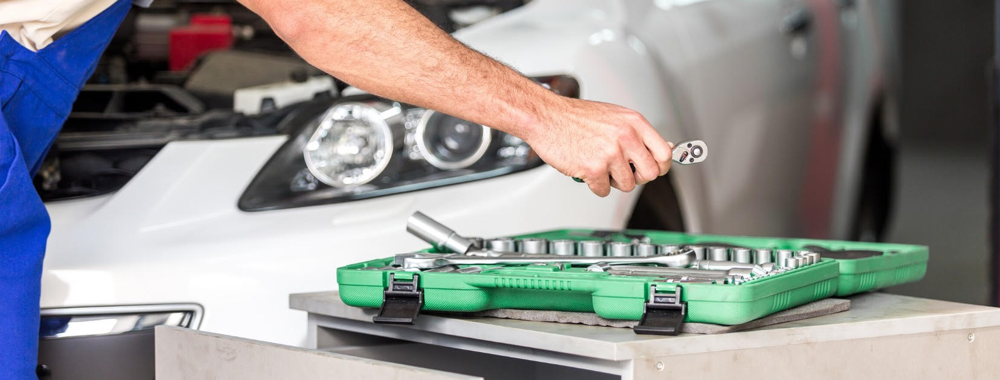
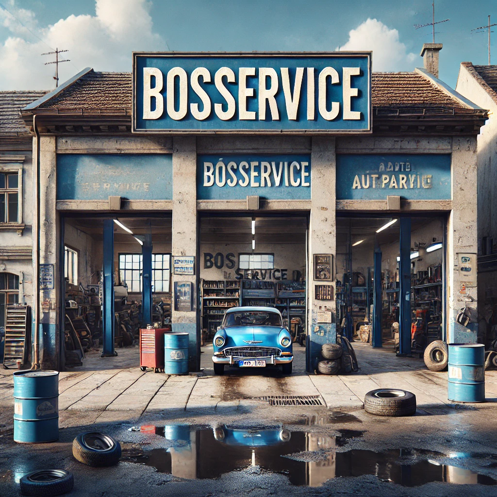
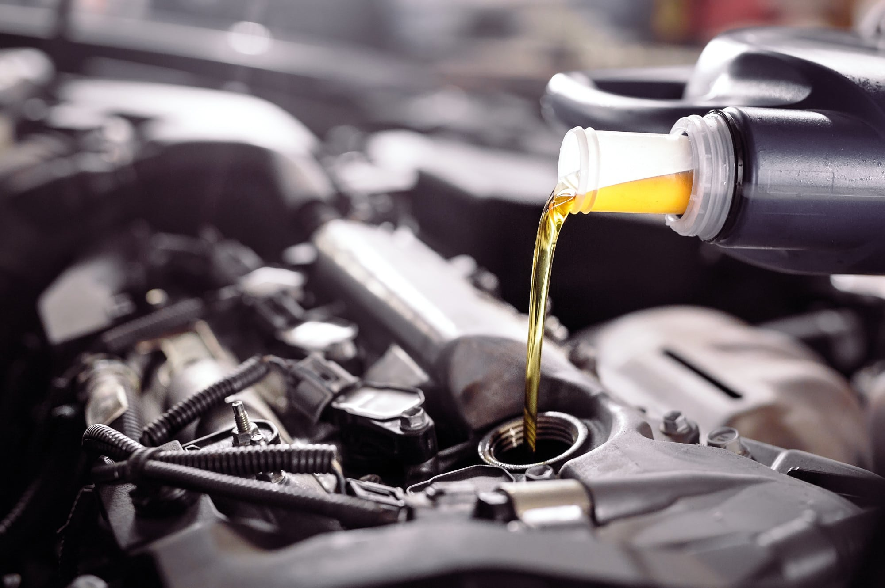
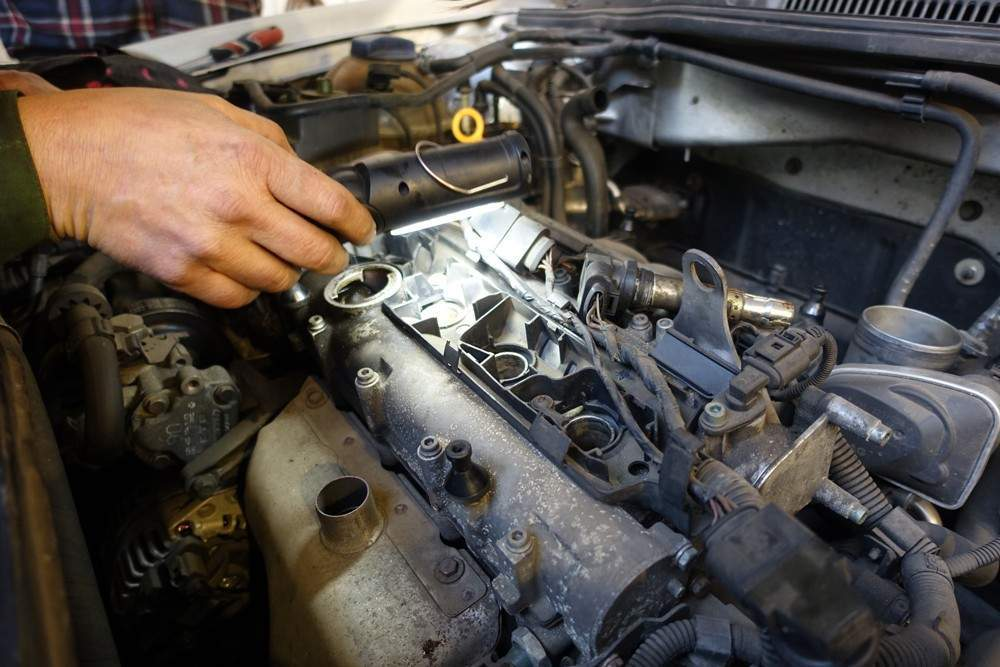
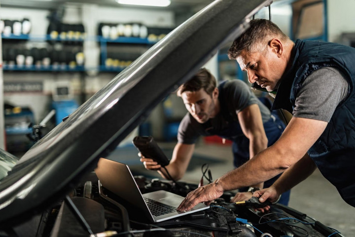
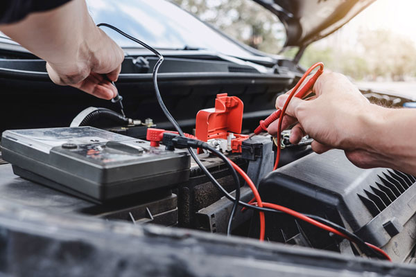
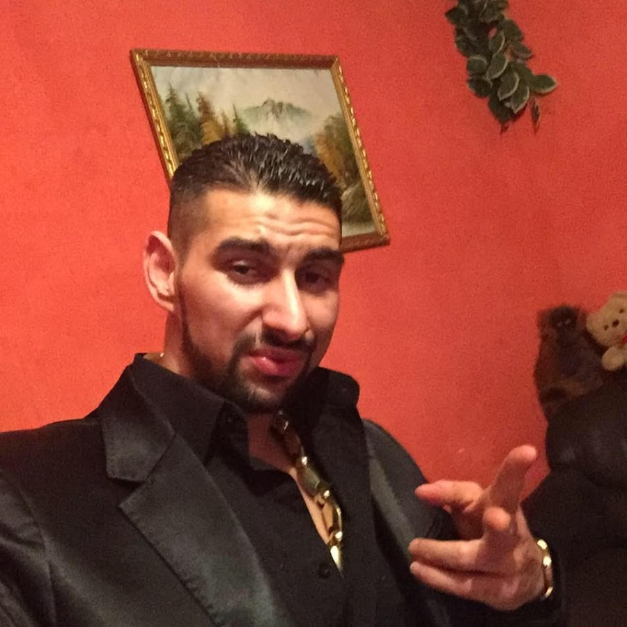
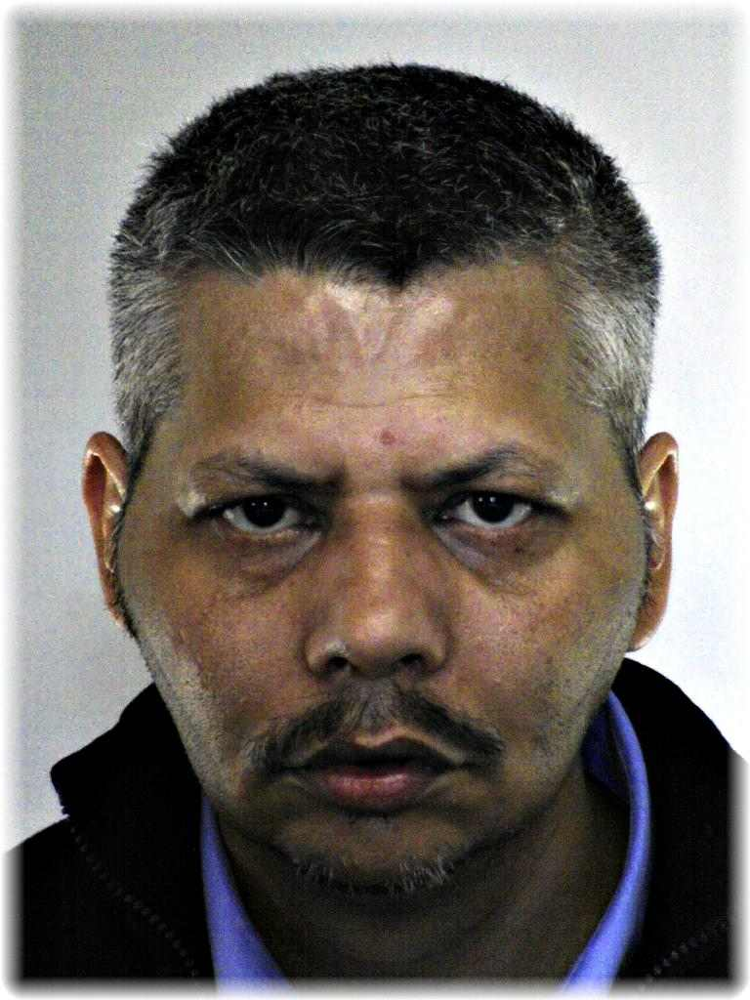
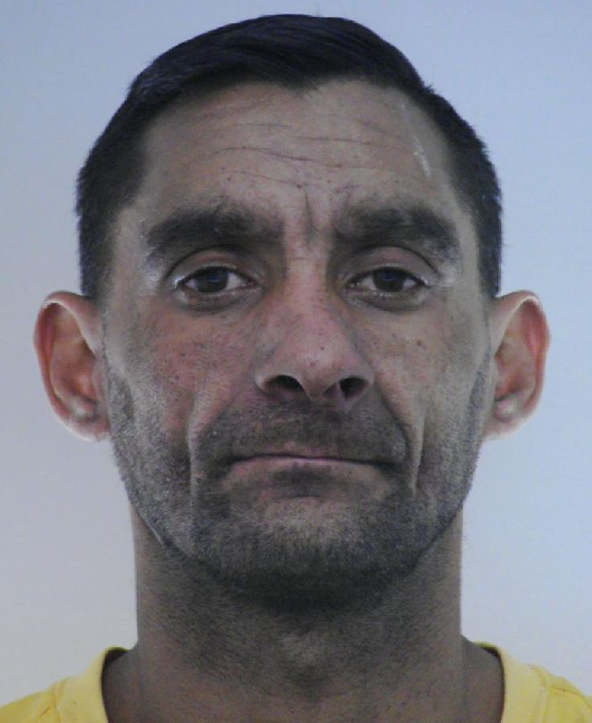
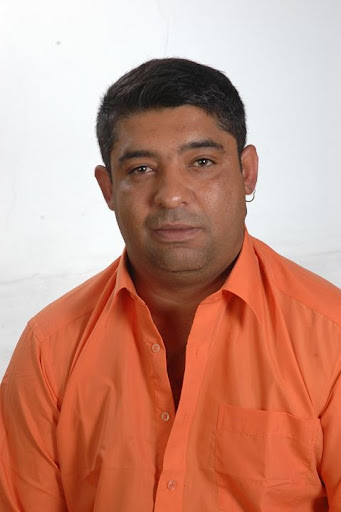

Rólunk

A BosService egy családi vállalkozás, amely több éves tapasztalattal rendelkezik az autószerelés területén. Célunk, hogy minden ügyfelünk számára gyors és megbízható szolgáltatást nyújtsunk, legyen szó akár kisebb javításról, akár komplexebb problémák megoldásáról. A legmodernebb eszközökkel és magasan képzett szakembereinkkel biztosítjuk, hogy autója a legjobb kezekben legyen. Kiemelt figyelmet fordítunk a minőségre, és arra, hogy minden munkát a lehető legprecízebben végezzünk el. A Skoda és Volkswagen márkákra szakosodva, az autóipar legújabb trendjeinek megfelelően végezzük el javítási és karbantartási feladatainkat. Számunkra a legfontosabb, hogy ügyfeleink elégedettek legyenek, és bátran ránk bízzák autójukat.
Látogasson el műhelyünkbe, ahol barátságos és segítőkész csapat várja!
Szolgáltatásaink

Olajcsere

Motorjavítás

Karbantartás

Egyéb javítások
Csapatunk

Lakatos Brendon vagyok legjobb olajcserés ember és ütőképes boxoló.

Kolompár Andor Ronáldó vagyok motorjavításba profi vagyok, ha kell a kati még akkor szóljál, mert viszem.

Orsós Antal vagyok autókarbantartó bármi kell megoldjuk okosba a tesókkal.

Bódi Gusztáv vagyok és én végzem az egyéb dolgokat amiket nem tudnak ezek megcsinalni.
Elérhetőség
Kapcsolatok:
Cím: Pécs, Esztergár Lajos utca 6
Telefon: 0670 123 4567
E-mail: bosservice@gmail.com
Nyitvatartás:
Hétfő-Péntek: 08:00 - 18:00
Szombat: 08:00 - 16:00
Vasárnap: Zárva